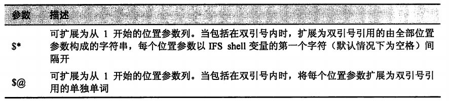

1. 位置参数
1.1. 访问命令行
shell 提供了一组名为位置参数的变量, 用于储存命令行中的关键字, 这些变量分别命名为 0~9。
即便没有提供任何实参, 变量 $0 总是会储存所执行程序的程序名。
提供的参数会依次赋值给 $1 $2 等等。
使用参数扩展技术, 用户实际上可以获取多于 9 个的参数。为标明一个大于 9 的数字, 将数字用大括号括起来, 如 ${10}。
确定实参的数目
- shell 提供了变量 $# 以给出命令行参数的数目。
shift -- 处理大量的实参
- 对于处理大量参数的情况，shell 提供了一种略显笨拙的处理方法。每次执行 shift 命令后, 所有参数的值均“下移一位“。
- 每当执行一次 shitf 命令时, 变量 $2 的值就赋给变量 $1, 而 $3 的值则赋给变量 $2, 依次类推。变量 $# 的值同时减 1。
示例
count=1
while [[ $# -gt 0 ]]; do
echo "Argument $count = $1"
count=$((count + 1))
shift
done
- 在 shell 函数中使用位置参数
- 就像位置参数可用于向 shell 脚本传递实参一样, 位置参数也可用于 shell 函数实参的传递。
- 函数中，变量 $0 的值(适用于 bash)
- shell 环境
- $0 为 bash
- $FUNCNAME 为函数名称
- 直接调用
- $0 为脚本的文件名称
- $FUNCNAME 为函数名称
- shell 环境
- 注意，在 zsh 中，不存在 FUNCTION 变量
- 函数中，$0 始终为函数名称
- 脚本中，$0 为脚本文件名称
1.2. 处理多个位置参数
有时将所有的位置参数作为一个整体来处理会比较方便。
shell 为这项功能提供了两种特殊的参数。两种参数都能够扩展为一个完整的位置参数列, 但是又有着微妙的区别。

- 示例
#!/usr/bin/env bash
print_params() {
echo "\$1 = $1"
echo "\$2 = $2"
echo "\$3 = $3"
echo "\$4 = $4"
}
pass_params() {
echo -e "\n" '$* :'; print_params $*
echo -e "\n" '"$*" :'; print_params "$*"
echo -e "\n" '$@ :'; print_params $@
echo -e "\n" '"$@" :'; print_params "$@"
}
pass_params "word" "words with spaces"
# $* 产出4个参数
# "$*" 产出1个参数
# $@ 产出4个参数
# "$@" 产出2个参数。与原始参数一直，它是大多数情况下最令人满意的方法。